O problema
As demandas de contratação ficam dispersas em planilhas por unidade, são recadastradas a cada ciclo e não há reaproveitamento entre unidades, gerando retrabalho e inconsistência de valores/especificações.
Cada unidade mantém planilhas locais com itens que deseja contratar. No PCA, essas listas são reenviadas e redigitadas; especificação técnica, valor unitário e orçamento vêm em formatos distintos e muitas vezes sem anexo de referência. A consolidação por Diretoria é manual.
Retrabalho de recadastro a cada ciclo; divergência de especificação e preço do mesmo item entre unidades; perda de histórico e de orçamentos de referência; dificuldade de consolidar valor global por grupo (custeio/investimento) e por unidade.
AS-IS · o processo antes do MVP
O caminho real, com quem faz, o que entra, onde espera e o que é automatizável. Fonte: tabela AS-IS do projeto.

Fluxograma AS-IS · amarelo: etapa manual; tracejado: ponto de espera. Os números correspondem à tabela. Fonte Mermaid.
| Etapa | Quem faz | Entra | Ação | Sai | Sistema | Regra | Onde espera | Tempo | Automatizável |
|---|---|---|---|---|---|---|---|---|---|
| Levantar necessidade | Servidor da unidade | Necessidade | Lista itens em planilha | Planilha local | Planilha | — | — | 4 | Sim, com regra clara |
| Cotar preço | Servidor | Item | Pesquisa preço/orçamento | Valor + PDF | E-mail/planilha | Mínimo de 1 orçamento | Fornecedores | 8 | Sim, com apoio humano |
| Enviar à chefia | Servidor | Planilha | Envia por e-mail | — | Caixa da chefia | 1 | Sim, com regra clara | ||
| Consolidar | Coordenador/Diretor | Planilhas de várias unidades | Junta e padroniza | Lista da Diretoria | Planilha | Agrupar por grupo (custeio/investimento) | — | 6 | Sim, com regra clara |
| Aprovar para o ciclo | Diretor/Coordenador | Lista consolidada | Decide o que entra | Demandas aprovadas | Planilha | Ciclo ativo | — | 2 | Não |
TO-BE · o processo com o MVP
O que muda em cada etapa, quem passa a fazer e o ganho esperado. Fonte: tabela TO-BE do projeto.

Fluxograma TO-BE · verde: máquina (automação local); azul: pessoa (fé pública). Fonte Mermaid.
Toda demanda é cadastrada uma vez num banco único, reaproveitável e rastreável, e aprovada para o ciclo com um clique.
- Cadastrar demanda
Formulário validado + PDF + preview de link
A pessoa assistida pela máquinaPadronização, sem recadastro - Disponibilizar no banco
Card no repositório da Diretoria
A máquina (automação)Reuso e transparência - Manifestar interesse
Outra unidade adere (quantidade + justificativa)
A pessoa assistida pela máquinaElimina item duplicado - Aprovar para o ciclo
1 clique cria a demanda APROVADO no ciclo
A pessoa assistida pela máquinaEntrada direta no PTA - Acompanhar
Demanda vai ao Kanban do ciclo
A pessoa assistida pela máquinaRastreio ponta a ponta
| Etapa | O que muda | Quem faz | Benefício | Esforço |
|---|---|---|---|---|
| Cadastrar demanda | Formulário validado + PDF + preview de link | A pessoa assistida pela máquina | Padronização, sem recadastro | Baixo |
| Disponibilizar no banco | Card no repositório da Diretoria | A máquina (automação) | Reuso e transparência | Baixo |
| Manifestar interesse | Outra unidade adere (quantidade + justificativa) | A pessoa assistida pela máquina | Elimina item duplicado | Baixo |
| Aprovar para o ciclo | 1 clique cria a demanda APROVADO no ciclo | A pessoa assistida pela máquina | Entrada direta no PTA | Baixo |
| Acompanhar | Demanda vai ao Kanban do ciclo | A pessoa assistida pela máquina | Rastreio ponta a ponta | Médio |
O que o MVP entrega
Tela-assinatura: Vitrine com filtros em facetas, ordenação e alternância cartões/tabela.
Menu do MVP: BancoNova demandaCiclosAprovarRelatóriosTrocar arquivosConfiguração
Regras de negócio
| ID | Regra | Quando | Tipo | Exceção |
|---|---|---|---|---|
R1 | Especificação técnica ≥ 50 caracteres | No cadastro/edição | Validação | — |
R2 | Justificativa ≥ 100 caracteres | No cadastro/edição | Validação | — |
R3 | valor_unitario > 0 e quantidade > 0 | No cadastro | Validação | — |
R4 | valor_global = valor_unitario × quantidade | Sempre | Cálculo | — |
R5 | Pelo menos 1 link de referência iniciando com http | No cadastro | Validação | — |
R6 | PDF de orçamento ≤ 10 MB | No upload | Validação | Anexo é opcional |
R7 | Aprovar exige ciclo orçamentário ATIVO | Na aprovação | Negócio | — |
R8 | Editar card: só o criador (ou ADM/Diretor) | Na edição | Acesso | ADM/Diretor |
R9 | Manifestação: só de outra unidade, 1 por unidade | Na manifestação | Negócio | — |
Papéis
| Papel | Quem é | O que vê | O que faz | O que não faz | Registro |
|---|---|---|---|---|---|
| ADM | Administrador do sistema | Todos os órgãos/Diretorias (acesso total) | Tudo: cria, edita, exclui, aprova, gera relatórios | — | Todas as ações |
| DIRETOR | Diretor da unidade | Banco da sua Diretoria | Cria, edita qualquer card, aprova, gera relatórios | Ver outra Diretoria (salvo ADM) | Autor e aprovador |
| COORDENADOR | Coordenador | Banco da Diretoria | Cria; aprova demandas das unidades que gerencia; gera relatórios | Aprovar fora das unidades que gerencia | Autor e aprovador |
| GERENTE | Gerente de unidade | Banco da Diretoria | Cria/edita os próprios itens; manifesta interesse | Aprovar; editar item de terceiro | Autor |
| USUARIO_SETORIAL | Servidor do setor | Banco da Diretoria | Cria/edita os próprios itens; manifesta interesse | Aprovar; editar item de terceiro | Autor |
| INVENTARIANTE | Inventariante | Banco (somente leitura) | Visualiza | Criar, editar ou aprovar | — |
Métricas do piloto
Como testar
O MVP é um `index.html` offline, com dados fictícios. Abra index.html.
cd Apps/horus-banco-demandas python construir.py python testes/testar.py python testes/cenarios.py python testes/jornada.py # Lightpanda (via WSL, CDP em 9222 e HTTP em 8000) python testes/jornada.py --cdp http://127.0.0.1:9222 --base http://127.0.0.1:8000
Documentos: PROJETO.md · sprint.md · README.md